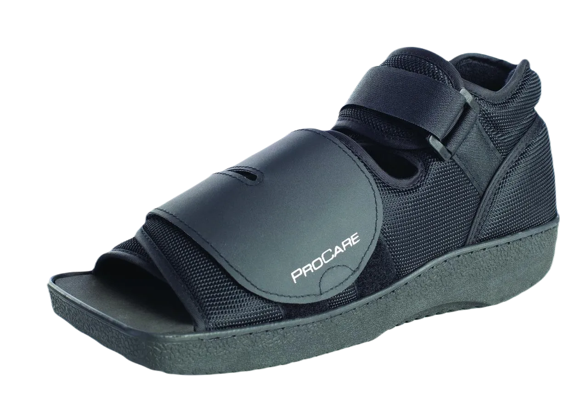
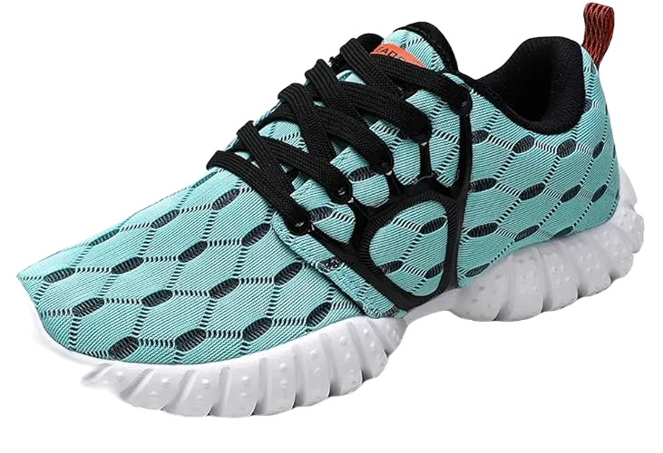

Top 7 Best Shoes For Stress Fractures In 2024
Many individuals suffer from aching and painful foot joints due to various conditions like stress fractures, foot injuries, and more. If you find yourself in this situation, selecting the right shoe becomes a necessity rather than just a choice.
However, the search for the perfect shoe to alleviate stress fractures can be overwhelming, as choosing the wrong footwear could worsen the problem. To help you out, we’ve compiled a list of the best shoes for stress fractures that will provide maximum comfort and relief.
-
#1
Vive Post Op Shoe
If you’re looking to restore comfort to your feet, the Vive Post Op Shoe – Lightweight Medical Walking Boot with Adjustable Strap is an excellent option. Its standout feature is the adjustable built-in strap design, making it ideal for those suffering from stress fractures. This lightweight sandal offers a great deal of relief for aching feet.
Since no shoe can perfectly match every foot shape, the adjustable straps and interior are especially beneficial. You can easily loosen or tighten the straps based on your comfort and foot structure, ensuring the right fit every time. The soft straps are gentle on your skin and provide a snug, secure feel.
In addition to the comfortable fit, the square toe design ensures proper foot alignment, while the non-skid rocker sole offers superior stability and traction. Whether you’re walking slowly or moving briskly, this shoe’s durable outsole provides reliable support, functioning like a personal assistant with every step. -
#2
ASICS Men’s Gel-Venture 6
.webp)
Any shoe you purchase from ASICS guarantees a perfect blend of style, comfort, and performance. The Gel-Venture 6 men’s running shoe is specifically crafted for feet with stress fractures and aching joints. Made from high-quality synthetic materials, this durable shoe is built to last and withstand the demands of regular wear.
One of its standout features is the rubber outsole paired with the rearfoot Gel cushioning system, which effectively absorbs shocks and reduces impact during movement. Whether you're making energetic strides or simply walking, this shoe ensures a smooth and comfortable experience. Its low-top arch promotes optimal foot placement, eliminating unnecessary stress on your feet, while the well-padded interior enhances overall comfort. The soft fabric tongue and collar prevent irritation, protecting your skin from abrasions or rashes.
Additionally, the shoe’s interior is generously cushioned to provide all-day comfort. It comes with a removable sockliner, allowing you to add an OrthoLite insert for added therapeutic benefits, further enhancing the shoe’s comfort and support throughout wear. -
#3
ALEADER Women’s Lightweight Mesh Sport
For professional runners and those who enjoy brisk walks, the ALEADER Women’s Lightweight Mesh Sport Running Shoe is an ideal choice. Its combination of quality construction and stylish design makes it a go-to option for those seeking comfort and relief. Crafted from stretchy fabric, the shoe also features a soft yet durable MD rubber sole, ensuring long-lasting performance.
The double mesh uppers enhance breathability, promoting a steady flow of air to keep your feet cool throughout wear. With this shoe, sweaty interiors are a thing of the past, as the airflow is effectively regulated to ensure maximum comfort. This makes the ALEADER footwear perfect for keeping your feet fresh, even during intense activity.
Additionally, the shoe’s 5-claw side design paired with a strong lace-up system ensures a snug fit, allowing you to adjust the laces to your liking. Inside, the cushioned insole and breathable lining offer superior softness, especially for those with stress fractures. With extra padding and thoughtful design features, this shoe provides unparalleled comfort, making it an excellent choice for long-lasting, enjoyable runs. -
#4
Saucony Men’s Cohesion 10
.webp)
Sports and vigorous physical activities often place significant pressure on vulnerable joints. Our feet, which endure constant strain without us realizing it, can suffer the most. The Saucony Men’s Cohesion 10 Running Shoe is specifically designed to alleviate the discomfort caused by tiny bone fractures. This shoe offers exceptional softness and resilience, providing much-needed relief for those with stress fractures.
The upper part of this Saucony shoe is made from soft, breathable fabric that ensures maximum comfort. Its durable rubber outsole offers excellent stability and traction, making it an ideal choice for individuals dealing with stress fractures or severe joint pain in their feet. Whether walking or running, this shoe delivers the support and protection your feet need.
A soft, comfortable interior is crucial, especially when dealing with foot pain. The Saucony Cohesion 10 incorporates an EVA midsole that offers therapeutic properties, ensuring that even in conditions of acute foot discomfort, this shoe provides optimal cushioning and relief. It’s the perfect combination of comfort and function for sensitive feet. -
#5
Brooks Adrenaline GTS 19
.webp)
When it comes to style and appeal, Brooks footwear truly stands out. This is one of the key reasons why so many people are drawn to this brand, praising it for its design and functionality. The shoe is not only stylish but also incorporates a variety of features aimed at providing maximum comfort, making it a popular choice for those seeking both aesthetics and support.
For individuals dealing with foot pain or joint issues, such as stress fractures or bunion pain, this shoe offers excellent relief. The soft, cushioned insole and comfortable interior work to gradually reduce discomfort, allowing you to walk and move with greater ease and stability, much like before the pain began.
In addition to its comfort, the shoe is known for its chic and trendy look. Available in 25 different vibrant colors, it has become a favorite among customers. Its versatile design makes it suitable for various occasions, whether you’re hitting the gym, going for a jog, or simply sporting a casual look for everyday wear—even for those dealing with Piriformis Syndrome. -
#6
ASICS GEL-Nimbus 20
.webp)
There are countless shoe brands on the market offering tempting styles, but ASICS continues to stand out for its quality craftsmanship. The brand earns a second mention in this article due to the therapeutic benefits of its footwear, particularly for those dealing with stress fractures. The GEL-Nimbus 20 Running Shoe is crafted with high-quality textile materials designed to ensure lasting comfort for sensitive feet.
The imported rubber outsole is both durable and resilient, providing a springy feel that enhances your walking experience. With its low-top arch, this shoe promotes perfect balance and even weight distribution. The FLYTEFOAM midsole technology ensures a bouncy and elastic step, ideal for runners or anyone looking to move with swift, smooth motion. Additionally, this shoe reduces the impact of shocks, offering vital protection for those with stress fractures, helping to ease the strain on cracked bones.
The rearfoot and forefoot GEL technology further enhance its shock-absorbing properties, repelling impacts during energetic movements. As you walk or run, the GEL cushioning works to protect your joints, preventing any discomfort from sudden jerks or impacts, making it an excellent choice for foot health and mobility. -
#7
Brace Ability Post-op Shoe
.webp)
Unlike the previous shoe, this one offers a distinct design and a focus on foot health. If you prioritize the well-being of your feet, this footwear ensures a smoother walking experience without putting stress on your joints. The durable polyester material enhances longevity, making it a purchase you won’t regret.
The BraceAbility Post-Op Shoe for Broken Foot or Toes features a non-skid outsole, providing reliable traction and stable footsteps. Its professional-grade quality and lightweight design promote excellent stability while applying minimal pressure on your feet. The adjustable straps allow for a snug fit, offering added comfort and support.
With balanced arch support, this shoe accommodates various foot types, ensuring a secure fit. The semi-open design promotes airflow, making it especially comfortable for those with conditions like sciatica. Its padded interior and soft feel are tailored to soothe and support feet with stress fractures, aiding in recovery and providing all-day comfort.